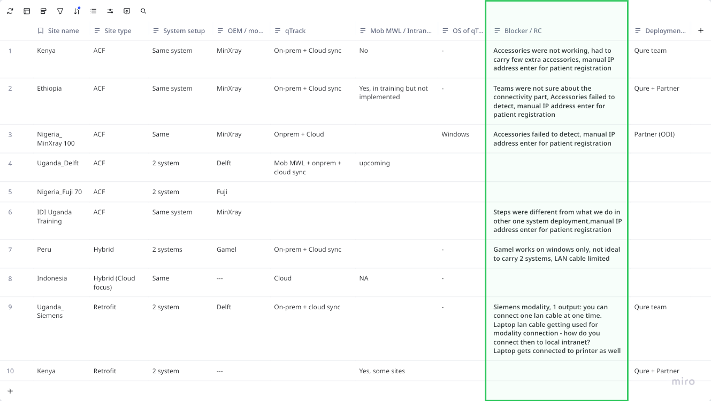
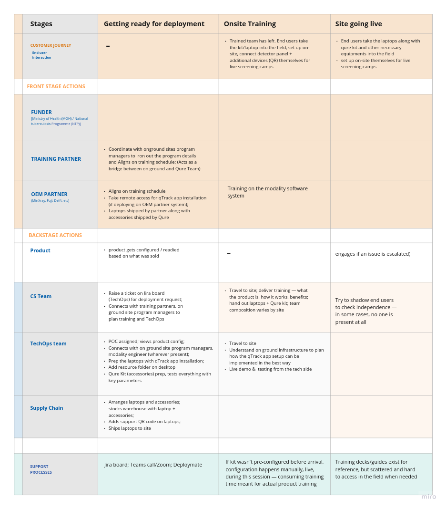
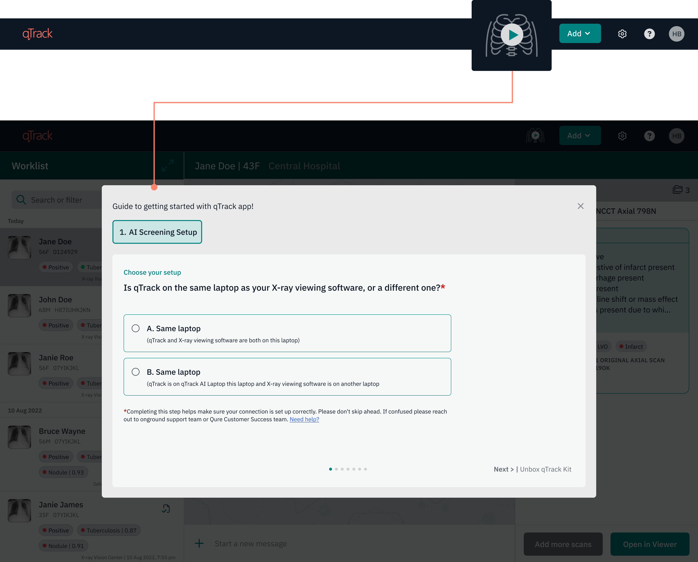
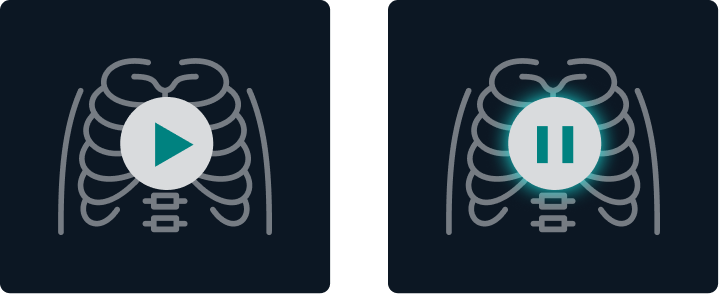
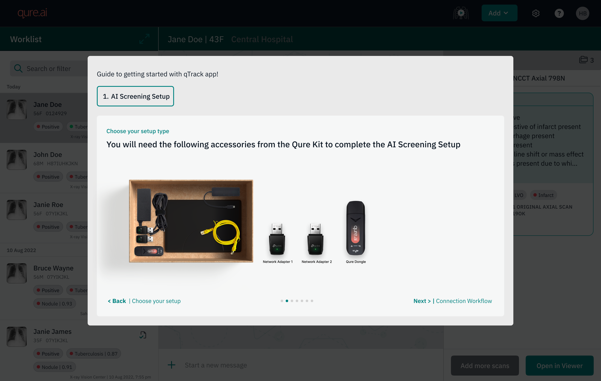
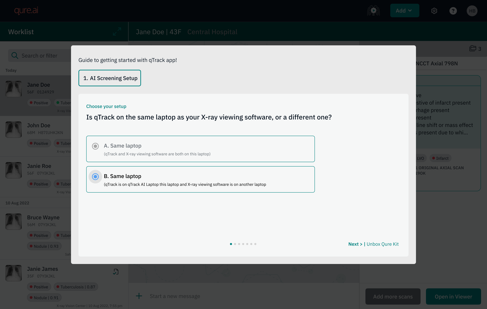

Background
Qure is a B2B AI healthcare company. Its product, qTrack, is an AI-based chest X-ray screening platform. The application is deployed in health screening camps to identify TB patients. These camps run in low resource, time sensitive environments with poor infrastructure and limited technical support on site, and no internet. Healthcare workers need to connect multiple pieces of hardware and devices together to start the screening process. In this environment, the setup experience must be stable, quick, and ideally plug and play for screening to begin smoothly. When so many components need to be connected in the right sequence, the setup easily becomes confusing and difficult for on ground staff. Any manual step or configuration adds real workload for users who have no technical background.
Problem
A key feature of registering patients via the qTrack app on modality software was not being adopted by users on the ground. The Customer Success team reported this pattern across multiple deployments, where users were unable to use this feature the way it was expected to work. Instead, the CS team had to train users on an alternative method that was highly manual and technical, with a high chance of error. This amounted to a workaround for completing the task, and it led to users skipping this feature altogether.
This feature was the starting point of the product workflow - failure here cascaded into every step after it, reducing adoption of the product's core capabilities overall.
Discovery
1. Understanding the issue
To understand why this was happening, I collaborated with the Customer Success team to map the full customer journey, from deployment, through onboarding, to the site going live. It helped me understand what steps were involved, both for end users and for the internal teams supporting the client side.
Although the issue had consistently been reported as a feature failure, these conversations revealed a broader pattern. Teams were spending considerable time helping users complete the setup, answering technical questions, and walking them through steps that were difficult to remember once training ended. As a result, many users relied on workarounds or skipped the capability altogether.
To validate this, we looked back at the previous 6-7 deployments and found a consistent pattern:
- On site confusion about the right way to connect accessories and hardware, a disconnect between CS and TechOps team
- Accessories frequently failed to detect
- Every deployment following a different connection and setup approach, with no repeatable steps

2. Understanding what enables the capability
To understand why the experience kept breaking down, I worked with TechOps to understand what was required to make this feature successful.
The investigation revealed that this capability depended on a chain of setup steps spanning both the product and the physical deployment environment - connecting the right hardware accessories, establishing a local network between devices, and preparing the environment correctly before a single patient could be registered. Each step had to happen in the right order; getting one wrong meant the rest wouldn't work either.
3. Mapping the deployment journey
To bring these findings together, I mapped the complete deployment journey from initial deployment, through onboarding, to the site going live using a service blueprint.
Looking at the journey end to end helped identify how different teams contributed to a successful deployment, where responsibilities changed hands, and where users were expected to figure things out on their own.
The mapping made it clear: while every team understood their own part of the process, the overall experience was fragmented across touchpoints. Critical on-ground setup and connection workflows were not standardized, and this caused last-minute chaos on the ground.

Connecting the Dots
The core insight
Rather than treating Remote Access as a single feature to fix, the opportunity was to design the setup experience around it - the series of steps users had to get right before the feature could work at all. The blueprint surfaced four insights, each pointing to a specific gap the design needed to close:
Insight 1: With scale custom workflow became impossible to manage
Every deployment used a custom workflow, which worked well when scale was small (6-10 systems going for one project) but it became difficult to manage 100+ systems going for one project. With no fixed repeatable setup approach it caused last minute chaos for both internal teams and end users, everyone had to figure out the right way to connect the setup once they reached the sites, stretching and delaying deployment timelines.
Insight 2: Standardization alone will not help until accountability for pre configuration was clearly defined between different teams
TechOps team owned accessories pre configuration in the kit that goes out along with qtrack AI laptop. But with so much uncertainty this step often got missed due to various reasons like: PO release from client side not timely done, assigned person for pre config is not clear how to do or when to do it, the step gets skipped. Because at the end there is time constraint the goal becomes to ship the laptop with qtrack app installed correctly and then trade off become to leave pre configuration for later, to be figured out on site. The gap becomes visible when users start interacting with the product and it is not working as expected.
Insight 3: Getting on the product had high friction making users question the product value
Users skipped the remote access feature because using it involved highly technical steps like finding the IP address of the laptop and then typing it in mobile browser. The effort was high and the feature was not stable, whenever they got disconnected they had to repeat the feature. This diluted the value of the feature.
Insight 4: Mismatch in training timeline vs when the users actually start using the product on ground
Once the Qure team left (CS, Techops & third party partners) a site, users were expected to set up and troubleshoot basic issues without enough resources.
There's often a months long gap between when a team is trained and when they actually start using the product on camp sites. By the time of real use, people forget the workflow, and new team members who joined in the interim were never trained at all. Since camp sites run at high patient load, any setup/workflow issue doesn't just inconvenience one person - it halts screenings for the whole camp in real time, causing panic and forcing your team into reactive, mid-camp remote fixes rather than calm, scheduled support.
Pushback received from the product and engineering teams
The investigation and stakeholder alignment together took almost 8-10 months. Most time went in aligning the different stakeholders. The two strong pushbacks that I had to defend -
- From engineering: The team had limited bandwidth and they challenged the solution by asking why this cannot be fixed through trainings that CS team does on ground, why do we need to add it in the product? Why cannot we solve by doubling down on the trainings.
- From the product team: the proposed fix was to add in app videos to help users navigate the setup steps and small snippets for how to use different features. The hypothesis product team had was that users are not understanding how to use the product but the site visits I did showed a different picture. They found the product easy to use and faced no difficulty in navigating the product. The caveat being if product is not installed properly or the qTrack app is not running stably that is where the users struggled the most.
Both engineering and product saw this problem as a training gap and designing more collaterals (user manuals, one pagers, videos) which will help users understand the process better. But the research revealed this was not true.
Solution & Design Rationale
Based on the above research and insights, I designed an in app guided onboarding workflow, built directly into the qTrack app, taking users through their specific deployment setup, step by step instead of completely relying on hands on training person which was difficult for users to remember.
Due to engineering team bandwidth constraint, the version that shipped was a minimum viable one just explaining the steps clearly in a simple way. The more focus was given on how to break it down into smaller chunks which are easy for users to follow through. The goal was to validate this proof of concept as soon as possible. (See section - Validation from Kenya site visit)
1. Why in app, and not any other channel?
These camps often run with unreliable or no internet. Reaching Customer Success, an on-ground partner, or engineering wasn't always possible when something went wrong. The laptop shipped with qTrack installed had to act as trusted support on the ground the only resource users had access to from Qure's side in these conditions.
Previous approaches tried were off-product - user manuals, training decks, and short videos, which I designed, both in content and visually. But because they were not part of the product, users had to keep these resources handy and step out of the product to access them, breaking their flow and adding an extra step. The qTrack app, on the other hand, could be opened even before it was connected to the rest of the screening setup - acting as a support resource to complete the setup itself.
qTrack's core value is to view AI results on imaging X-Ray's and act on them. But Africa being a low resource region - where infrastructure gaps go beyond just internet access, made it very difficult show the real product value of qTrack. High effort was required in setting up the connection workflow even before user could come to the qTrack.
Initially, I thought of adding the onboarding workflow in the support section, treating setup as a support help. But as I mentioned above users had tough time in reaching the product's core function without this scaffolding, then getting them there wasn't support it was as central to the experience as the AI results themselves. So it became its own section "Start Screening" mirroring the exact sequence a user moves through on the ground, in the same order, to reduce the uncertainty.

Why it looks like play and pause

TB screening camps are intense - high patient load, a lot happening at once. The whole process feels like a session, and I wanted the button to reflect that. Once you start, you're in it until you're done for the day, so the interaction needed to feel like starting and stopping a session, not just a one-off action. The intention behind this section was to create a safe, guided environment once users start screening patients on the ground. It walks them through the exact steps needed to get the setup running so they can use qTrack, then quietly checks on a few basic things in the background and reminds them what to watch out for, so the rest of the session runs smoothly.
2. What had to be standardized before hardware and app could feel like a single product experience
The next challenge was deciding how to handle deployment variation. Previously, accessory configuration depended on what each site's infrastructure could support (for example, sometimes a site's own local network was used, sometimes Qure's accessories were used to create one instead). This was mostly decided once the team reached the site, since business deal conversations mostly focused on how funders'/health ministry goals could be met through the program. On-ground camp workflow conditions and end-user motivations took a back seat. This gap caused delay and confusion in configuring accessories. It worked at a small scale, where 6-10 sites were present under one program, but became difficult to manage once a single program started having 100+ sites.
This shifted the approach: instead of depending on client-side infrastructure that couldn't be known or controlled in advance, the team decided to control the variables that were easy to manage - every deployment would ship with pre configured accessory kits, regardless of site conditions, creating a consistent, controlled setup rather than guessing at what a site could offer. This gave the onboarding workflow two clear configurations to design for: a single laptop running both qTrack and the modality software, or two separate laptops, one for each.
The hardware and qTrack application have always felt like two different experiences. Once the Qure kit was received, adding clear instructions on how to use it right there in the onboarding workflow, alongside the laptop helped make this feel like one experience instead of two. One cannot exist without the other. It set the right expectations with the user: this is part of the process of getting started with qTrack, bridging the physical and digital into a single, cohesive experience. Since the on-ground team varies by role (TB nurse, radiographer, radiologist, healthcare worker, modality engineer, IT), the goal was to keep this simple enough for non-technical users clearly highlighting, visually, what was needed at each step.

3. Simplifying technical steps into plain questions which non technical users can answer
Narrowing every deployment down to two configurations meant the setup could be written as fixed, simple questions, which was impossible when every site had custom setup workflows. The goal was to break it into the simplest possible question format, so reading a question felt like guidance on the next action rather than getting lost in what am I supposed to do next, or who should I reach out to - a maze to work through. This meant working with training partners and the Qure CS/TechOps teams to simplify the steps and use user friendly language without diluting the purpose but making sure a non technical person is able to understand and take next action with confidence.

Impact
- Org level changes
- The problem got reframed across the organization from "a feature isn't working" to "the deployment and setup experience needs to be designed end to end."
- Got cross-functional alignment on a standardization rule - accessories are now pre-configured for every deployment, regardless of site, removing last minute guesswork and confusion.
- Operational workflow for TechOps changed
- Deployment workflow got streamlined, how each accessory hardware will be used from the kit got standardised. No more customisation, leaving only two fixed configurations to choose from (one-system or two-system) based on the user's environment.
- CS, TechOps, and Product started using the setup workflow diagrams to align early on rather than waiting for on site training, they could decide and communicate the setup in advance with OEM partners and on-ground program managers, since there were only two configurations to choose between.
- Secondary effects that surfaced downstream
- Reduced dependency on a single experienced person being physically present at each site to make deployments succeed.
- Elevated the Qure Kit's hardware accessories from a fallback option to core infrastructure - since every deployment now depends on them, they were re-benchmarked for reliability. Saving cost, no wastage of accessories, no faulty ones.
Strategic positioning
Qure gets an edge as the first touchpoint in the onboarding workflow - there's an existing tension between OEM and Qure over who the user associates with the product experience, and this shifts that in Qure's favor.
Validation on the design direction
I visited Kenya for the site visit. There we had two on ground partner teams supporting. They have been part of multiple projects. Both teams responsible for specific geographies under that project. These partners act as Qure's local presence, managing sites, installing qTrack software if needed, handling technical issues, and training end users.
The two teams were quite different in their understanding of technical aspects. Both team comprised of bio medical engineers (3-4 members in each team). Team A picked up TechOps and engineering training quickly and was able retain it well. The other Team B struggled, they understood the process conceptually, but it was difficult for them to do the steps independently.
I tested the new onboarding workflow, here the users were different - they are expected to be little more tech savvy than end users. But if these on ground partners don't feel confident then how can we expect them to train end users. The workflow helped them.
These teams have been part of multiple deployment projects so they had something to compare it with when no in app guidance existed. They were aware about the on ground chaos that happens when there is no structured way to deploy but with this new onboarding workflow they had clear choices A & B to choose from and follow the steps.
The validation I needed was -
- Can you rely on these steps that are mentioned, is there anything else needed which was getting missed
- Is it following the same workflow as on ground or not
(See how this validation helps in evolving the idea further - Designing Support experience for onprem systems with no reliable internet)